#3881 Talk to Me
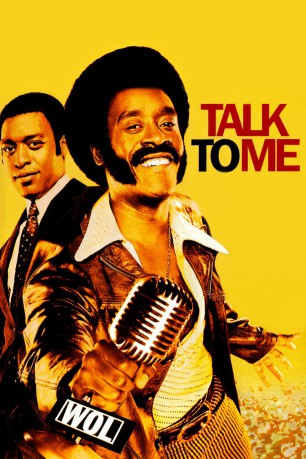 
 IMDB-Wertung: 7.4 / 10
IMDB-Wertung: 7.4 / 10  Tomatometer: 82
Tomatometer: 82  Metascore: 0
Metascore: 0 
Petey Greene ist zu allem entschlossen, als er aus dem Gefängnis entlassen wird. Er träumt davon, Radio DJ zu werden und nichts und niemand kann ihn dabei aufhalten. Petey redet aus seinem kleinen Studio zu den Menschen über Rassismus und Bürgerrechte, über Drogen und Politik, über Gerechtigkeit und Sex. Seine Unverfrorenheit, die Dinge beim Namen zu nennen und sein beißender Humor lassen die Quoten schon bald nach oben schnellen. Sein endgültiger Durchbruch als Stimme des Volkes wird ausgerechnet am Tag der Ermordung von Martin Luther King besiegelt, wo er durch seine legendär gewordene Moderation wie kein zweiter die Stimmung der Bevölkerung trifft. Aus dem Kleinkriminellen ohne Zukunft wird schließlich eine der bekanntesten Persönlichkeiten dieser Ära mit eigener Fernsehshow und einer wachsenden Anhängerschaft. Doch Peteys innere Dämonen lassen sich nicht so einfach abschütteln und drohen, seinen Traum zu zerstören.
Jahr: 2007
Dauer: 118 Minuten
FSK: 12
Land: USA Studio: Focus FeaturesTonspuren: DD5.1 - ,
Untertitel: Deutsch, Englisch,
Auflösung: 1080p (1920x816) Größe: 6492 MB
Genre: Drama, Musik, Krieg, Geschichte, Biographie
Regisseur: Kasi Lemmons
Drehbuch: Ronald D. Moore
Soundtrack:
Darsteller:
- 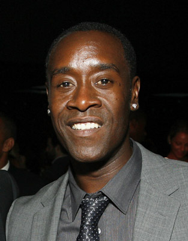 Don Cheadle als Petey Greene
- 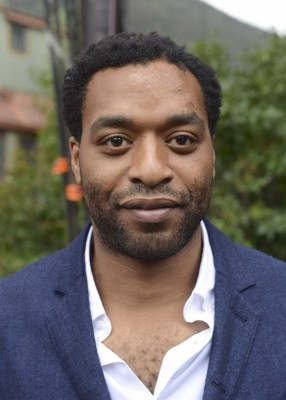 Chiwetel Ejiofor als Dewey Hughes
- 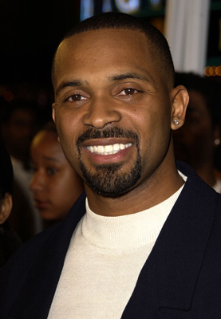 Mike Epps als Milo Hughes
- 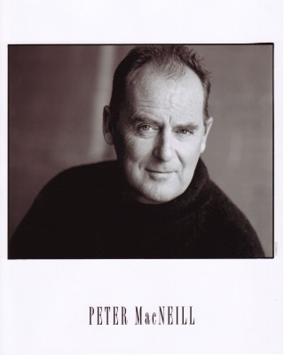 Peter MacNeill als Warden Cecil Smithers
- 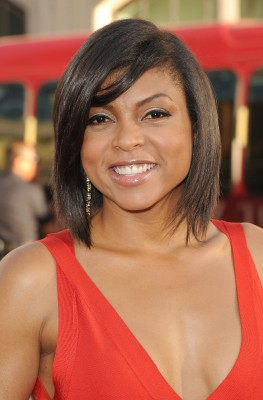 Taraji P. Henson als Vernell Watson
- 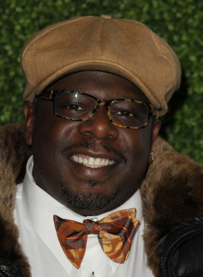 Cedric the Entertainer als 'Nighthawk' Bob Terry
 Martin Sheen als E.G. Sonderling
Martin Sheen als E.G. Sonderling- J. Miles Dale als Program Director
- Martin Randez als Hadley
- Todd Schroeder als Guard Captain
- 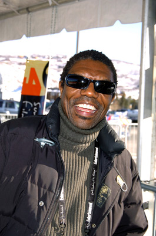 Vondie Curtis-Hall als Sunny Jim Kelsey
- Jeff Kassel als WOL P.A.
- 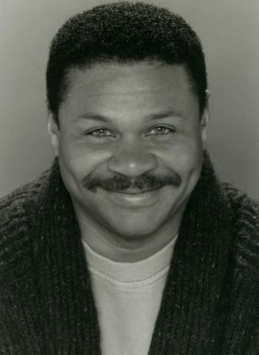 Johnie Chase als Bar Patron 1
- 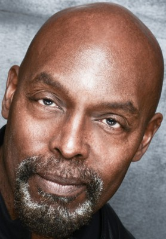 Eugene Clark als Bar Patron 2
- 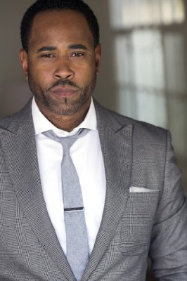 Benz Antoine als Bar Patron 3
- Elle Downs als Peaches
- Ngozi Paul als Susan
 Matt Birman als Business Man
Matt Birman als Business Man- 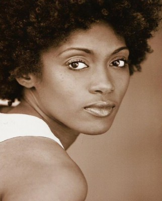 Vicky Lambert als Backup Singer #1
 Jim Annan als Tonight Show P.A.
Jim Annan als Tonight Show P.A.- Robert J. Tavenor als Engineer
- Tennille Byrd als Protestor , uncredited
- 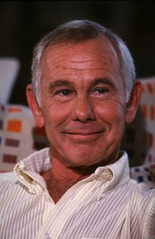 Johnny Carson als Himself , archive footage, uncredited
- 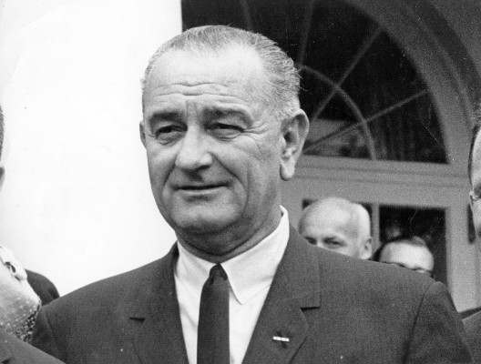 Lyndon Johnson als Himself , archive footage, uncredited
- 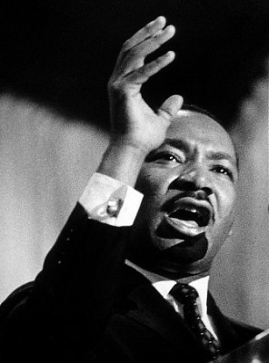 Martin Luther King als Himself , archive footage, uncredited
- 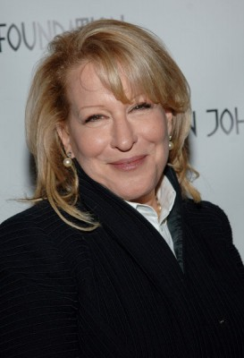 Bette Midler als Herself , archive footage, uncredited
- 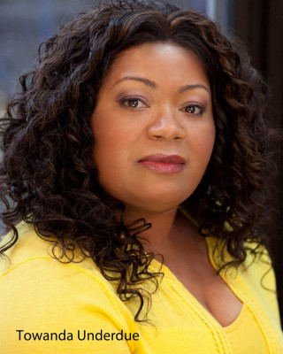 Towanda Underdue als Charity Worker , uncredited
- Bruce McFee als Prison Sign-In Guard
- Adam Gaudreau als Escorting Guard
- Sean MacMahon als Ronnie Simmons
- Richard Chevolleau als Poochie Braxton
- Alison Sealy-Smith als Freda
- Warren Alan Young als Bartender
- Malik McCall als Rioter
- Herbert Rawlins als James Brown
- Mantee Murphy als Backup Singer #2
- Josh McLaughlin als TV News Anchor
- Richard Fitzpatrick als Charles Sumner
- Damir Andrei als Fred De Cordova
- Donald James Malmberg als Johnny Carson
- 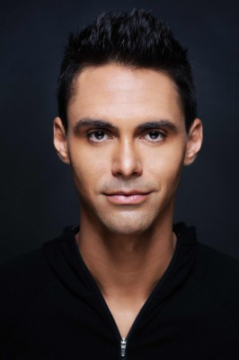 David Brown als Jail Guard
Datei: X:\2007(N-Z)\Talk to Me (2007, FSK12, 1920x816).mkv seit 26.06.2016
Festplatte: HD 2007(A-Z)-2008(A-F)
 Es gibt insgesamt 56 Filme in der Gruppe '2007(N-Z)'
Es gibt insgesamt 56 Filme in der Gruppe '2007(N-Z)'